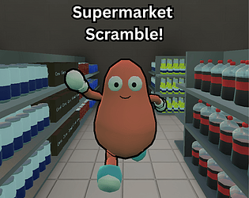

I’m Dempsey, a student and aspiring game developer with a passion for
creating games and learning how they work behind the scenes. I’m
currently studying T Level Digital Software Development, where I’ve
developed my skills in programming, web development and software
design.
Outside of college, I regularly work on my own game
projects and take part in game jams, experimenting with gameplay
mechanics, AI, UI and 3D development. I mainly work with Godot and
GDScript, and I’m always looking to learn new technologies and improve
with each project I create. My goal is to continue into university
studying game development and eventually build a career in the games
industry.